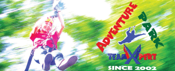

Adventure Parks
We have a long experience in building Adventure Parks. The first Park in Romania - Aventura Parc Butimanu - was built by us in 2005. Then followed Comana Adventure Park, with 7 routes for children and adults and a zip line of 200 m over the lake.
With over 15 years of experience, we are one of the first companies to build adventure parks in Romania. If you are interested in building a Park, we can help you with the project, as well as with the construction. For details please contact us.
Adventure Park means first of all Fun. An Adventure Park includes several spectacular trails, high in the canopy. There are different trails for children and for adults, with different degrees of difficulty. Here, families and company employees in teambuilding programs can come to have fun and spend their free time.
If you would like to organize a memorable Family Day at Comana Adventure Park or Cernica Adventure Park, please contact us.

Comana Adventure Park
Comana Adventure Park was built by TeamXpert in 2012. It has 7 routes and a zip line over the lake. More »
Cernica Adventure Park
Cernica Adventure Park is the closest to Bucharest. It has 9 routes, 3 of which are for children, as well as a double zip line over the lake! The zip line is composed of 2 passes, which, together, gather 800 m of yippee feelings. More »
Aventura parc
Aventura Parc is the first Adventure Park built by TeamXpert. It is located in Butimanu, near Buftea. More »